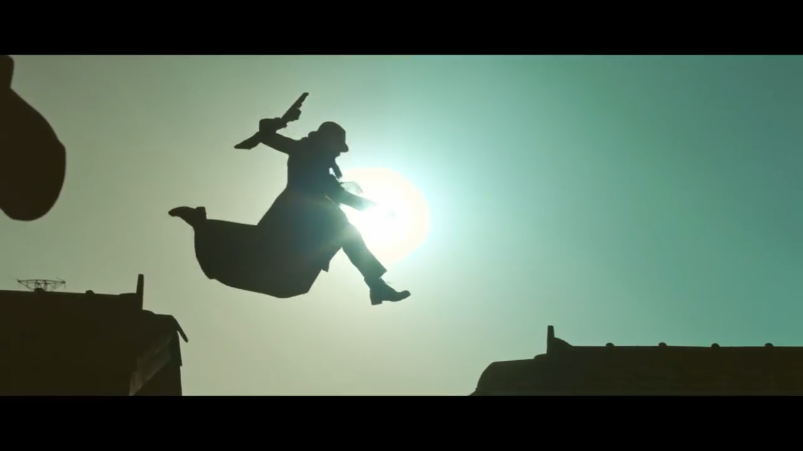

누구도 가보지 않은 그 여정에서 길을 잃지 않는 유일한 방법은 당장 눈에 보이는 갈등과 결핍, 그 손익 계산에 앞서 아프다는 말조차 하지 못했던 누군가의 고통에 귀 기울이며, 진정 가고자하는 가야만하는 길을 자주 살피고 상기해야만 한다. 가보지않은 여정에서 작고, 잦은 실패로 자꾸 좌절하고 실망하는 이유가 뭔지 알고봤더니, 그것은 통과의례일 뿐 결코 최종 목적지가 아니었음을 깨달아야 한다는 것이다. 아무것도 손에 잡히지 않는 헛것인 줄 알면서도 그것을 쫓아가는 동안 나는 영원한 자유인이 된다. 
삶은 지나간 후회를 뒤집을 기회를 거의 주지 않는다. 반성과 성찰 없이 한 발작도 앞으로 나갈 수 없다. 돌이켜 보면 언제나 나는 하고 싶은 것을 참거나 더 좋은 때를 기다렸다. 하지만 이제 깨달은 것은 더 좋은 때란 없다는 것이다. 모든 것은 끝나기 마련이고 지금보다 더 좋은 때란 없다. '시작’은 특별한 순간이 아니다. 모든 순간이 다 새로운 출발이고 ‘시작’이다. 시작은 마음 다잡고 맞이해야 할 무엇이 아니라 일상의 시간들 속에서 성실히 수행해야 할, 때로는 나의 의지와 무관하게 수행되고 있는 어떤 것이다. 그것들은 다 어제의 결과들이다. 자연스럽게 오늘의 목숨에 나를 걸어라. 지극한 마음으로 임하면 그 결과로 구하는 바를 반드시 얻게 된다. 젊은이는 늙고 늙은이는 죽는다. 그걸 늙어서 깨달으면 큰일 난다. 사나우면 남들이 꺼리고 나약하면 남이 업신여긴다. 사나움과 나약함을 버려 지혜롭게 중도를 지킬 줄 아는 것이 중년의 힘이다.
"자신의 운명은 누구도 모른다.자신조차 모른다.그러나 운명에 거스르며 살아가려 하는 것이 인간이다." - 마츠모토 레이지